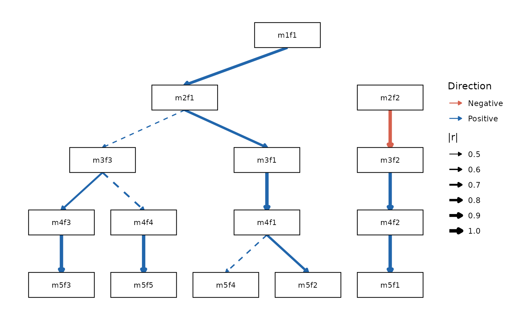

The problem: which factor solution is right?
Anyone who has applied factor analysis faces the same dilemma: how many factors should you extract? Parallel analysis might say 5; the scree plot might suggest 3; a reviewer might insist on 1. Each solution seems to describe the data differently, and it is tempting to treat them as competing answers to the same question.
Goldberg (2006) reframed this problem: the different solutions are not competing — they are complementary. A 1-factor solution captures the broadest shared variance in the data, the dimension along which all variables correlate. A 5-factor solution captures narrower, more specific dimensions. These two levels of resolution describe the same underlying structure from different vantage points, just as a satellite image and a street map describe the same city.
The bass-ackwards method makes this relationship explicit. It fits factor models at every level from 1 up to k, and then computes the correlations between factor scores across adjacent levels. Those correlations show you:
- Which narrow factor inherits from which broad factor — the lineage of each dimension as you move from coarse to fine resolution.
- Where a factor splits — a single broad factor that correlates strongly with two narrower factors is fragmenting into sub-dimensions.
- Where a factor is stable — a factor that correlates ~1.0 with its counterpart at the adjacent level is essentially the same construct appearing at two resolutions.
The result is a hierarchy map — a visual and numerical account of how the factor structure of your data builds from broad to narrow.
Note: This is a descriptive, data-driven hierarchy, not a confirmatory hierarchical model like Schmid–Leiman or higher-order SEM. The between-level correlations are score correlations (or their algebraic equivalents), not model parameters. See
vignette("engines")for when to use EFA or ESEM instead of PCA.
Data
We use the 25-item Big Five Inventory from the psych
package (psych::bfi). The items measure five personality
traits — Agreeableness (A1–A5), Conscientiousness (C1–C5), Extraversion
(E1–E5), Neuroticism (N1–N5), and Openness (O1–O5) — each on a 6-point
Likert scale, in 2,800 participants.
We drop 364 cases with any missing item, leaving n = 2,436. In a real
analysis you might use pairwise deletion or multiple imputation;
na.omit() is sufficient for this illustration.
Step 1: How many factors? suggest_k()
Before fitting the hierarchy, it helps to have a sense of the
plausible range of k. suggest_k() runs two established
selection criteria:
- Parallel analysis (Horn, 1965): compares observed eigenvalues against those from random data of the same size and suggests retaining factors whose observed eigenvalues exceed the parallel-analysis threshold.
- Velicer’s MAP criterion (Velicer, 1976): examines the average off-diagonal partial correlation after successive factors are extracted; suggests the k at which this average is minimized.
sk <- suggest_k(bfi)
#> ℹ Running parallel analysis (20 iterations)...
#> Parallel analysis suggests that the number of factors = NA and the number of components = 5
#> ✔ Running parallel analysis (20 iterations)... [119ms]
#>
#> ℹ Running MAP (Velicer)...
#> ✔ Running MAP (Velicer)... [124ms]
#>
sk
#>
#> ── Factor / Component Count Suggestion (ackwards) ──────────────────────────────
#> Variables: 25
#> n: 2,436
#> Basis: pearson
#> Tested k: 1–8
#>
#> ── Criteria (k = 1–8) ──
#>
#> ✔ k = 1: MAP = 0.0249 | PA suggested
#> ✔ k = 2: MAP = 0.0189 | PA suggested
#> ✔ k = 3: MAP = 0.0175 | PA suggested
#> ✔ k = 4: MAP = 0.0157 | PA suggested
#> ✔ k = 5: MAP = 0.0146 | PA suggested
#> - k = 6: MAP = 0.0160 | PA not suggested
#> - k = 7: MAP = 0.0194 | PA not suggested
#> - k = 8: MAP = 0.0222 | PA not suggested
#>
#> ── Recommendations ──
#>
#> • Parallel analysis: k ≤ 5
#> • MAP (Velicer): k = 5
#> Consensus: k = 5
#> ────────────────────────────────────────────────────────────────────────────────
#> Note: k in ackwards() is a maximum depth. Consider setting k one or two levels
#> above the consensus to observe factor fragmentation.
#> Caution: parallel analysis tends to overextract; many suggested structures do
#> not replicate (Forbes, 2023). Treat this as a range.What is that warning?
suggest_k()detected that the BFI items look ordinal (integer-valued, ≤ 7 distinct values). By default it still uses Pearson correlations, which can underestimate factor loadings for ordinal items. When you move toackwards(), you can address this withcor = "polychoric"— we will do that next.
Both criteria agree: k = 5. This matches the instrument design (Big
Five) and gives us a clear target. The note at the bottom reminds us
that k in ackwards() is an upper bound — the
hierarchy covers every level from 1 to k, so setting k one or two levels
higher than the consensus is often informative.
Step 2: Fit the hierarchy ackwards()
Now fit the bass-ackwards hierarchy. The most important arguments are:
| Argument | What it controls | Default |
|---|---|---|
k |
Maximum depth of the hierarchy | (required) |
method |
Extraction engine: "pca", "efa", or
"esem"
|
"pca" |
cor |
Correlation type: "pearson", "spearman",
"polychoric"
|
"pearson" |
rotation |
Rotation criterion (orthogonal CF ≈ varimax) | "cfT" |
Because BFI items are ordinal, we use
cor = "polychoric". This computes polychoric correlations
between items before factor extraction, giving a more accurate
representation of the latent structure.
x <- ackwards(bfi, k = 5, cor = "polychoric")No warning this time — specifying cor = "polychoric"
tells ackwards() that you have already thought about the
measurement scale.
Step 3: Summarize the result
High-level summary
print() gives a quick overview:
x
#>
#> ── Bass-Ackwards Analysis (ackwards) ───────────────────────────────────────────
#> Engine: pca
#> Rotation: cfT
#> Basis: polychoric
#> n: 2,436
#> k (max): 5
#>
#> ── Levels ──
#>
#> ✔ k = 1: 1 factor, 22.9% variance
#> ✔ k = 2: 2 factors, 34.7% variance
#> ✔ k = 3: 3 factors, 43.9% variance
#> ✔ k = 4: 4 factors, 51.8% variance
#> ✔ k = 5: 5 factors, 58.3% variance
#>
#> ── Edges ──
#>
#> 14 of 40 edges have |r| ≥ 0.3
#> ────────────────────────────────────────────────────────────────────────────────
#> Note: This is a series of linked solutions, not a fitted hierarchical model.
#> Cross-level edges are descriptive score correlations.The “Levels” section confirms that all five models converged, and reports the cumulative variance explained at each level. Notice that the jump from k = 1 to k = 2 is large (22.9% → 34.7%), while later jumps are smaller — characteristic of data with a strong general factor and several specific dimensions.
The “Edges” section reports how many of the 40 possible between-level connections exceed the display threshold of |r| ≥ 0.3. The 40 comes from summing across all adjacent pairs: 1×2 + 2×3 + 3×4 + 4×5 = 2 + 6 + 12 + 20 = 40.
glance() returns the same information as a one-row data
frame, convenient for comparisons across models:
glance(x)
#> method rotation cor_type k_max n_obs deepest_converged n_edges
#> 1 pca cfT polychoric 5 2436 5 40Step 4: Visualize the hierarchy autoplot()
The hierarchy diagram is the centerpiece of the method. Each column represents one level (k = 1 on the left, k = 5 on the right). Arrows connect each factor to its primary parent — the factor at the level above with which it has the strongest correlation (|r|). Arrow thickness is proportional to |r|; color shows direction (blue = positive, orange = negative by default); solid arrows indicate strong connections (|r| ≥ 0.6), dashed arrows show moderate ones (|r| ≥ 0.3).
autoplot(x)
Reading this diagram from left to right tells the story of the Big Five:
- k = 1: One broad factor. Given the polychoric basis, this captures shared variance across all 25 items.
- k = 2: The broad factor splits into two: one that will become Extraversion/Agreeableness/Conscientiousness and one that will become Neuroticism/Openness.
- k = 3: Three factors emerge, with Neuroticism separating out.
- k = 4: Agreeableness and Extraversion begin to differentiate.
- k = 5: The canonical Big Five appear.
The factors are labeled m{k}f{j} (level k, factor j).
These stable IDs are used throughout the object, so m5f1 at
k = 5 refers to the same factor in the loadings, the edge table, the
factor scores, and the diagram.
Adjusting the diagram
# Show only strong connections; relabel the k = 5 factors
autoplot(x, cut_show = 0.5, cut_strong = 0.7)
See ?autoplot.ackwards for the full argument list.
Step 5: Dig into the factors tidy()
tidy() extracts any component of the result as a tidy
data frame. The what argument controls what is
returned.
Factor loadings
loadings_df <- tidy(x, what = "loadings")
head(loadings_df)
#> level factor item loading
#> 1 1 m1f1 A1 -0.2833735
#> 2 1 m1f1 A2 0.5409066
#> 3 1 m1f1 A3 0.6047889
#> 4 1 m1f1 A4 0.4887739
#> 5 1 m1f1 A5 0.6516240
#> 6 1 m1f1 C1 0.4133898Each row is one item at one level for one factor. You can filter to a specific level to see what items define each factor. Here are the strongest-loading items at k = 5:
lv5 <- loadings_df[loadings_df$level == 5, ]
lv5 <- lv5[order(-abs(lv5$loading)), ]
lv5[!duplicated(lv5$factor), c("factor", "item", "loading")]
#> factor item loading
#> 266 m5f1 N1 0.8292885
#> 307 m5f3 C2 0.7587492
#> 287 m5f2 E2 -0.7515616
#> 327 m5f4 A2 0.7427664
#> 375 m5f5 O5 -0.7081540Between-level edges
edges <- tidy(x, what = "edges")
# Primary-parent edges sorted by strength
primary <- edges[edges$is_primary, c("from", "to", "r")]
primary[order(-abs(primary$r)), ]
#> from to r
#> 9 m3f1 m4f1 0.9990773
#> 7 m2f2 m3f2 -0.9975486
#> 33 m4f3 m5f3 0.9972853
#> 26 m4f2 m5f1 0.9964532
#> 40 m4f4 m5f5 0.9930407
#> 14 m3f2 m4f2 0.9789921
#> 1 m1f1 m2f1 0.8737068
#> 3 m2f1 m3f1 0.8157785
#> 22 m4f1 m5f2 0.7879035
#> 19 m3f3 m4f3 0.7150725
#> 20 m3f3 m4f4 0.6989590
#> 24 m4f1 m5f4 0.6157559
#> 5 m2f1 m3f3 0.5767812
#> 2 m1f1 m2f2 0.4864530is_primary marks the strongest-connecting edge for each
factor (its primary parent). The r values close to 1.0 indicate factors
that are nearly identical across adjacent levels — a sign of a stable,
replicable dimension. Smaller values indicate where the structure is
reorganizing.
Variance explained
tidy(x, what = "variance")
#> level factor variance_pct cumulative_pct
#> 1 1 m1f1 22.90 22.90
#> 2 2 m2f1 20.28 20.28
#> 3 2 m2f2 14.46 34.74
#> 4 3 m3f1 17.10 17.10
#> 5 3 m3f2 14.05 31.16
#> 6 3 m3f3 12.76 43.92
#> 7 4 m4f1 16.98 16.98
#> 8 4 m4f2 13.72 30.70
#> 9 4 m4f3 11.29 41.99
#> 10 4 m4f4 9.78 51.77
#> 11 5 m5f1 13.60 13.60
#> 12 5 m5f2 13.38 26.97
#> 13 5 m5f3 11.36 38.34
#> 14 5 m5f4 10.27 48.61
#> 15 5 m5f5 9.72 58.33Each row is one factor at one level. variance_pct is the
percentage of total item variance explained by that factor;
cumulative_pct accumulates within a level.
Step 6: Score observations augment()
Factor scores place every observation on each factor at every level. They are useful for regression, clustering, or any downstream analysis where you want a continuous summary of a latent dimension.
augment(x, data = bfi) computes scores on the fly from
the stored weight matrices and appends them to your data frame. The
score columns are named .m{k}f{j} to distinguish them from
the original variables.
scored <- augment(x, data = bfi)
#> Warning: ! Factor scores are standardized using model-implied SDs from a "polychoric"
#> correlation matrix.
#> ℹ The raw projection uses `scale(data)` (Pearson z-scores), but `score_var`
#> comes from the "polychoric" R.
#> ℹ Empirical score SDs will differ from 1.0. For non-Pearson analyses,
#> between-level edges from `tidy()` are the authoritative associations.
dim(scored) # 25 original items + 15 score columns (1+2+3+4+5)
#> [1] 2436 40
names(scored)[26:40]
#> [1] ".m1f1" ".m2f1" ".m2f2" ".m3f1" ".m3f2" ".m3f3" ".m4f1" ".m4f2" ".m4f3"
#> [10] ".m4f4" ".m5f1" ".m5f2" ".m5f3" ".m5f4" ".m5f5"Scores are standardized so that the model-implied
variance is 1 — meaning the scaling comes from the polychoric
correlation matrix, not from the raw data. In practice the empirical
standard deviations will be close to but not exactly 1 when a
non-Pearson basis is used; see ?augment.ackwards for
details. For pure PCA on Pearson correlations the model-implied and
empirical variances agree exactly.
If you need scores repeatedly (e.g., in a cross-validation loop),
store them at fit time with scores = TRUE to avoid
re-applying the weight matrices on every call:
x2 <- ackwards(bfi, k = 5, cor = "polychoric", scores = TRUE)
#> Warning: ! Factor scores are standardized using model-implied SDs from a "polychoric"
#> correlation matrix.
#> ℹ The raw projection uses `scale(data)` (Pearson z-scores), but `score_var`
#> comes from the "polychoric" R.
#> ℹ Empirical score SDs will differ from 1.0. For non-Pearson analyses,
#> between-level edges from `tidy()` are the authoritative associations.
scored2 <- augment(x2) # uses stored matrices — no recomputation
identical(round(scored2$.m5f1, 8), round(scored$.m5f1, 8))
#> [1] TRUEUsing scores for downstream analysis
Because augment() returns a plain data frame, the scores
slot directly into any standard R workflow. As a quick illustration, the
k = 5 factor scores should be nearly uncorrelated with each other — a
consequence of orthogonal rotation — while scores across levels should
be highly correlated along the primary-parent lineage:
# Within-level correlations at k = 5: should be near zero (orthogonal rotation)
k5 <- scored[, grep("^\\.m5", names(scored))]
round(cor(k5), 2)
#> .m5f1 .m5f2 .m5f3 .m5f4 .m5f5
#> .m5f1 1.00 0.01 0.01 0.01 -0.01
#> .m5f2 0.01 1.00 -0.01 -0.01 -0.01
#> .m5f3 0.01 -0.01 1.00 -0.02 -0.02
#> .m5f4 0.01 -0.01 -0.02 1.00 -0.02
#> .m5f5 -0.01 -0.01 -0.02 -0.02 1.00
# Cross-level: m4f1 is the primary parent of m5f2 and m5f4 (from the edge table)
round(cor(scored[, c(".m4f1", ".m5f1", ".m5f2", ".m5f4")]), 2)
#> .m4f1 .m5f1 .m5f2 .m5f4
#> .m4f1 1.00 0.02 0.79 0.61
#> .m5f1 0.02 1.00 0.01 0.01
#> .m5f2 0.79 0.01 1.00 -0.01
#> .m5f4 0.61 0.01 -0.01 1.00The cross-level block confirms lineage: .m4f1 correlates
strongly with .m5f2 and .m5f4 (the k = 5
factors it spawned) and near-zero with .m5f1 (which
descends from a different k = 4 factor). This is a sanity check you can
run on any result — strong parent–child correlations should appear
exactly where the tidy(what = "edges") table says they
should.
Summary
The bass-ackwards workflow in ackwards has six steps:
-
suggest_k(data)— identify a plausible range for the hierarchy depth. -
ackwards(data, k, cor = ...)— fit the full hierarchy of factor models. -
print(x)/glance(x)— check that all levels converged and read the top-level summary. -
autoplot(x)— visualize the hierarchy as a lineage diagram. -
tidy(x, what = ...)— extract loadings, edges, or variance in a form ready for tables or further analysis. -
augment(x, data = ...)— generate factor scores for downstream use.
Next steps
| Topic | Vignette |
|---|---|
| When PCA is not enough: comparing EFA and ESEM engines | vignette("ackwards-engines") |
| Ordinal data: polychoric correlations and WLSMV estimation | vignette("ackwards-ordinal") |
| Skip-level connections and pruning with the Forbes extension | vignette("ackwards-forbes") |
References
Goldberg, L. R. (2006). Doing it all bass-ackwards: The development of hierarchical factor structures from the top down. Journal of Research in Personality, 40(4), 347–358. https://doi.org/10.1016/j.jrp.2006.01.001
Waller, N. G. (2007). A general method for computing hierarchical component structures by Bass-Ackward factor analysis. Journal of Research in Personality, 41(4), 745–752. https://doi.org/10.1016/j.jrp.2006.08.005
Horn, J. L. (1965). A rationale and test for the number of factors in factor analysis. Psychometrika, 30(2), 179–185.
Velicer, W. F. (1976). Determining the number of components from the matrix of partial correlations. Psychometrika, 41(3), 321–327.